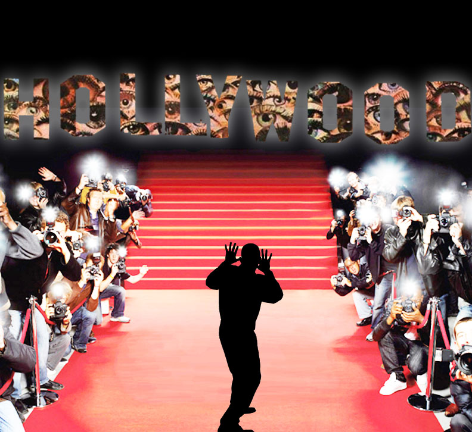

Image Adaption Project
Originally, the Hollywood sign represents is the idea of idealistic and nearly unattainable but desired fame and recognition. Growing up, I had always had a particular connection to Hollywood. I was always mesmerized by the idea of “fame,” and have gone through many “fan girl” stages in my life. It is fascinating to me just how much power and influence Hollywood has over the average person. I remember how much Hollywood films and musicians influenced me as a pre-teen and teen, and how it continues to influence me today. To most people, Hollywood represents the lifestyles of the rich and famous, and the people who can get whatever they desire just because of who they are. Hollywood is popular culture and heavily influences what is a trend at any given time to a large population of people. It is such a huge influence on society that it has the power to turn anyone from an average person into a superstar overnight. I manipulated the image of the Hollywood logo in several different ways for my project. The first two images I tried to imagine Hollywood and fame from a celebrity perspective. I read a very interesting study about the psychology of the celebrity, and learned some very interesting things about what it’s like. Celebrities often describe the anxiety of constantly living under public scrutiny because they are always in the public eye. Because of this, I created an overlay mask of a collage of eyes over the Hollywood sign, so it would appear as though the eyes are staring out of the sign. The subject is the shadow of a celebrity, who aside from his/her talent is just as much of an individual as all of the paparazzi taking pictures on the sides. Nevertheless, no matter how “normal” this silhouetted celebrity might wish to be, they know that they can never escape the “all knowing” eyes of Hollywood and fans that are watching their every move. This image, if created more professionally and in the context of paranoid and constantly being watched, I could see as the cover of a horror movie poster.